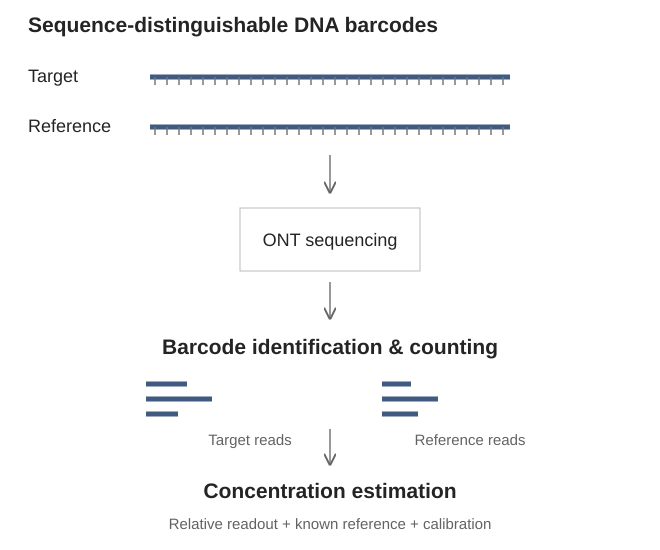

Imperial College London · Current MSci research
Reference-Based DNA Barcode Quantification
Investigating reference-based DNA quantification using Oxford Nanopore Technologies (ONT). By comparing sequence-distinguishable DNA barcodes with an internal reference, this work explores strategies to improve the accuracy, precision, and reliability of nanopore-based concentration measurements.
Explore Research